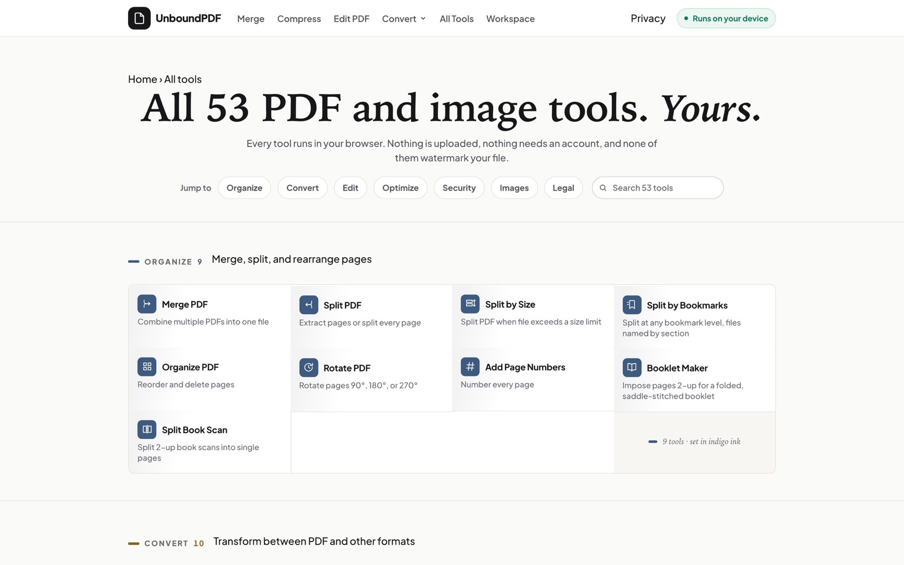
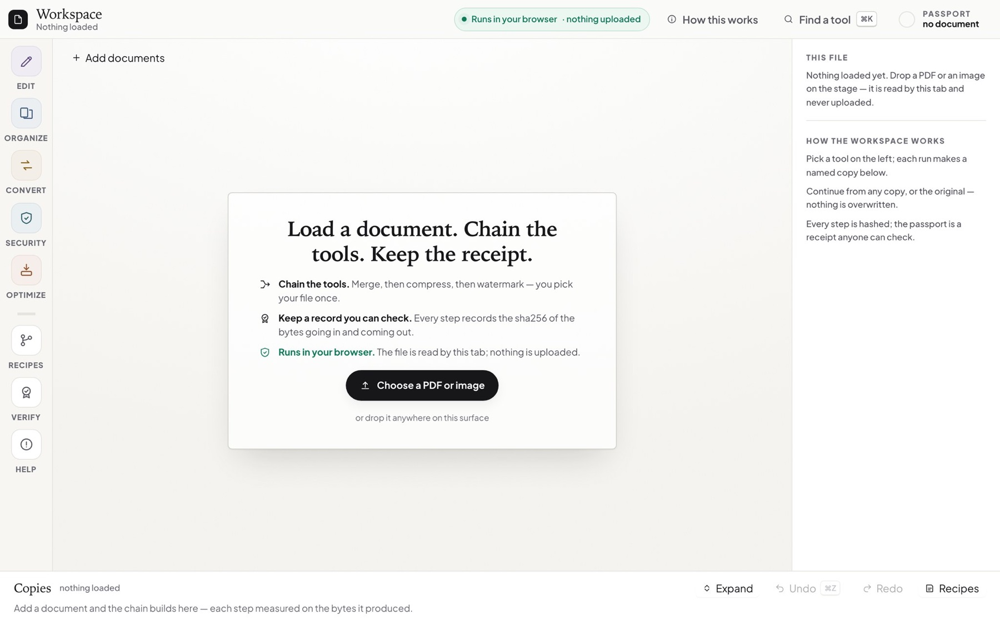

01
The problem
Most online PDF tools upload your file to someone else's server before they do anything with it.
02
The plan
Every PDF tool, running in the browser, so the file never has to be uploaded anywhere.
03
What I built
01 / 03
54 tools in English and German, all deriving their counts from one registry

02 / 03
A workspace that keeps your files encrypted in your own browser

03 / 03
A release gate on every deploy: a tool audit in three browser engines and a checksum sweep of every served file

04
How I know it works
511 Workspace checks, none failing
A checksum sweep of every served file
218 of 218 public pages answering 200 after the 31 Oct release
Merge demo on this page: 4 requests, all static files; no file left the tab
54tools, all in the browser
0uploads
218public pages, English and German
05
All 54 tools
Each opens the live tool on unboundpdf.com.
54 of 54 tools
Convert12
Organize14
Secure and clean11
06